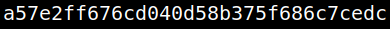

4.2 Get access as an user (First flag)
1. Show the users.
www-data@shenron:/$cat /etc/passwd
Output:
There's an user called “shenron”.
2. Change to user “shenron” with the credential you got in “wpscan”.
www-data@shenron:/$su shenron
Output:

3. Get the flag.
shenron@shenron:/$cd
shenron@shenron:~$ls
shenron@shenron:~$ cat local.txt
shenron@shenron:~$ls
shenron@shenron:~$ cat local.txt
Output:
